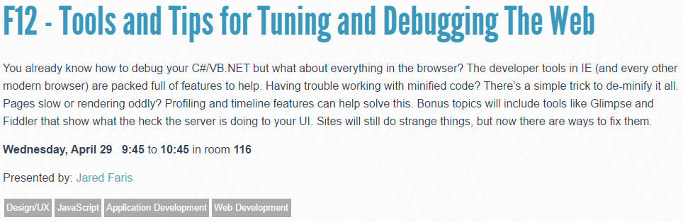
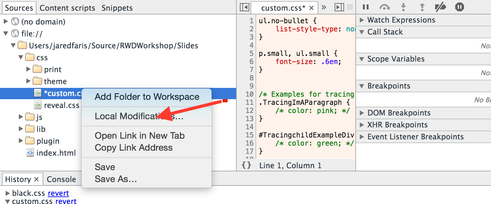
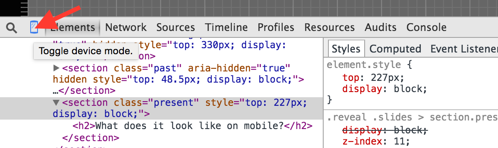
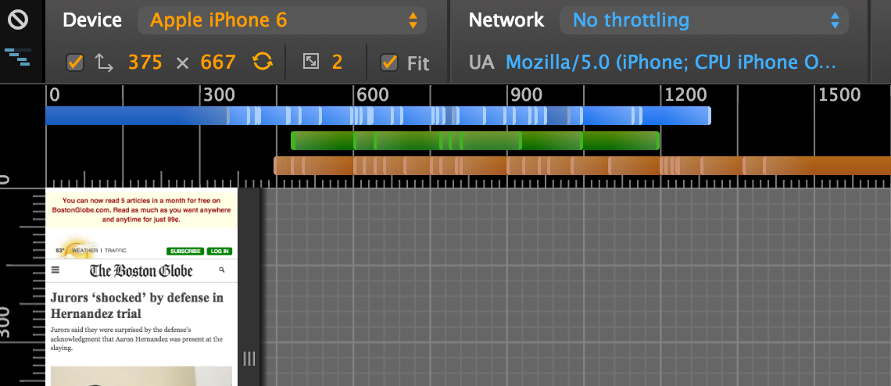
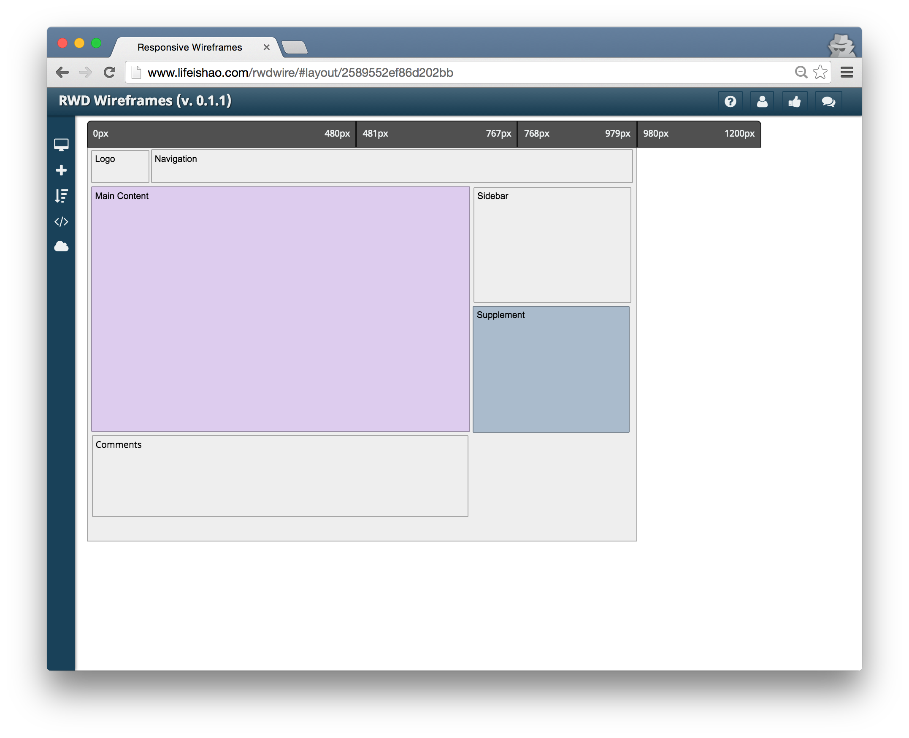

Let's Learn
Responsive Web Design
Derek Briggs - Jared Faris
Today's Topics
- Brief bios
- Target audience
- Mobile landscape
- Browser tools
- CSS basics
- RWD design/dev process
- Using the Bootstrap grid
- Performance, bandwidth, etc
- Questions
About Us
Target Audience
Mobile landscape
Options
- Native
- Mobile Web (m.)
- Hybrid
- RWD
Native
- + Fast
- + Fully access to all available features
- - Requires specialized skills
- - Cost of maintaining each app in addition to main site
Mobile Web
http://m. sites
- + Doesn't affect existing apps
- + Cheaper than a rewrite
- + Can work across browsers
- - Dramatically different user experience
- - Cost of maintaining two web sites
Hybrid
Xamarin, Cordova, etc.
- + Leverages skills your team already has
- + Access to most device features
- + Can work across browsers
- - May have performance penalties
- - May incur licensing costs
RWD
- + Leverages skills your team already has
- + Can work across browsers
- + No licensing costs
- - Limited and varying access to device features
- - May be difficult to implement on existing sites
What is this RWD?
- Modern web design
- Building sites that respond to each device
- Finding/fixing where designs break down
- Creating a consistent experience across devices
Example
http://www.bostonglobe.comBrowser Tools
Today, use Chrome
There's an entire session dedicated to F12 tools across all browsers if you're interested.
HTML Inspection
Dev Tools - HTML
- Search
- Insert
- Delete
- Edit as HTML
Edit this list
- 1
- 2
- 4 needs deleted
- 4
- Search for me
- 6 edit html
Copying/Dragging
- I should be first
- I should be third
- I should be second
- There should be two of me
Dev Tools - CSS
Editing styles
- You can't see me
- But you can see me
Box Model manipulation
This may be really hard to read
because it's all squished together
so maybe you should consider padding.
I mean seriously, that's a lot of
text, all in one really dense block.
Tracing Computed Styles
I should be blue.
Finding Your Changes
What does it look like on mobile?
View A Real Site
 http://www.bostonglobe.comCSS basics
What is a Responsive Grid?
What are breakpoints?
Alternatives to Grids
RWD design/development process
Wireframes
Conceptual tools exist like this one
Intro to Bootstrap
Bootstrap Grid
Bootstrap Controls
TODO: Hands-on workshop building new site
TODO: Hands-on workshop retrofitting existing site
Performance, bandwidth, etc
Questions
Vertical Slides
Slides can be nested inside of each other.
Use the Space key to navigate through all slides.
Basement Level 1
Nested slides are useful for adding additional detail underneath a high level horizontal slide.
Basement Level 2
That's it, time to go back up.
Slides
Not a coder? Not a problem. There's a fully-featured visual editor for authoring these, try it out at http://slides.com.
Point of View
Press ESC to enter the slide overview.
Hold down alt and click on any element to zoom in on it using zoom.js. Alt + click anywhere to zoom back out.
Touch Optimized
Presentations look great on touch devices, like mobile phones and tablets. Simply swipe through your slides.
Fragments
Hit the next arrow...
... to step through ...
... a fragmented slide.
Fragment Styles
There's different types of fragments, like:
grow
shrink
roll-in
fade-out
current-visible
highlight-red
highlight-blue
Transition Styles
You can select from different transitions, like:
None -
Fade -
Slide -
Convex -
Concave -
Zoom
Themes
reveal.js comes with a few themes built in:
Black (default) -
White -
League -
Sky -
Beige -
Simple
Serif -
Night -
Moon -
Solarized
Slide Backgrounds
Set data-background="#dddddd" on a slide to change the background color. All CSS color formats are supported.
Image Backgrounds
<section data-background="image.png">Tiled Backgrounds
<section data-background="image.png" data-background-repeat="repeat" data-background-size="100px">Video Backgrounds
<section data-background-video="video.mp4,video.webm">Background Transitions
Different background transitions are available via the backgroundTransition option. This one's called "zoom".
Reveal.configure({ backgroundTransition: 'zoom' })Background Transitions
You can override background transitions per-slide.
<section data-background-transition="zoom">Pretty Code
function linkify( selector ) {
if( supports3DTransforms ) {
var nodes = document.querySelectorAll( selector );
for( var i = 0, len = nodes.length; i < len; i++ ) {
var node = nodes[i];
if( !node.className ) {
node.className += ' roll';
}
}
}
}
Code syntax highlighting courtesy of highlight.js.
Marvelous List
- No order here
- Or here
- Or here
- Or here
Fantastic Ordered List
- One is smaller than...
- Two is smaller than...
- Three!
Tabular Tables
| Item | Value | Quantity |
|---|---|---|
| Apples | $1 | 7 |
| Lemonade | $2 | 18 |
| Bread | $3 | 2 |
Clever Quotes
These guys come in two forms, inline:
“The nice thing about standards is that there are so many to choose from”
and block:
“For years there has been a theory that millions of monkeys typing at random on millions of typewriters would reproduce the entire works of Shakespeare. The Internet has proven this theory to be untrue.”
Intergalactic Interconnections
You can link between slides internally, like this.
Speaker View
There's a speaker view. It includes a timer, preview of the upcoming slide as well as your speaker notes.
Press the S key to try it out.
Export to PDF
Presentations can be exported to PDF, here's an example:
Global State
Set data-state="something" on a slide and "something"
will be added as a class to the document element when the slide is open. This lets you
apply broader style changes, like switching the page background.
State Events
Additionally custom events can be triggered on a per slide basis by binding to the data-state name.
Reveal.addEventListener( 'customevent', function() {
console.log( '"customevent" has fired' );
} );
Take a Moment
Press B or . on your keyboard to pause the presentation. This is helpful when you're on stage and want to take distracting slides off the screen.
Much more
- Right-to-left support
- Extensive JavaScript API
- Auto-progression
- Parallax backgrounds
- Custom keyboard bindings